usethis::use_course("https://workshop.f4sg.org/africast/exercises.zip")Exercises
Check with your mentor on Slack
Set-up
We’ve prepared an exercises project with some starter code for each of the sessions. You can download and open this project using:
Learn
Creating a time series tibble (a tsibble!)
A tsibble is a rectangular data frame that contains:
- a time column: the
index - identifying column(s): the
keyvariables - values (the measured variables)
You usually create a tsibble by converting an existing dataset (read from a file) with as_tsibble(). For example, let’s look at the production of rice in Guinea.
# Read in the dataset using readr
library(readr)
guinea_rice <- read_csv("data/guinea_rice.csv")
# Convert the dataset to a tsibble
# Here the index variable is 'Year', and there are no key variables.
# The 'Production' variable is what we're interested in forecasting (the measured variable).
library(tsibble)
guinea_rice <- as_tsibble(guinea_rice, index = Year)A tsibble enables time-aware data manipulation, which makes it easy to work with time series. It also has extra checks to prevent common errors, while these can be frustrating at first they are important in correctly analysing your data.
There are two common mistakes when creating a tsibble, which we’ll see in the next example of Australian accommodation.
# Read in the dataset using readr
aus_accommodation <- read_csv("data/aus_accommodation.csv")
# Try to convert the dataset to a tsibble
aus_accommodation <- as_tsibble(aus_accommodation, index = Date)Error in `validate_tsibble()`:
! A valid tsibble must have distinct rows identified by key and index.
ℹ Please use `duplicates()` to check the duplicated rows.
That didn’t work…
Reading the error says we have ‘duplicated rows’. What this means is that we have two or more rows in the dataset for the same point in time. In time series it isn’t possible to get two different values at the same time, but it is possible to measure several different things at the same time.
When you get this error, consider if any of the dataset’s variables can identify individual series.
Tip
The identifying key variables of a time series are usually character variables, and the measured variables are almost always numeric.
aus_accommodation# A tibble: 592 × 5
Date State Takings Occupancy CPI
<date> <chr> <dbl> <dbl> <dbl>
1 1998-01-01 Australian Capital Territory 24.3 65 67
2 1998-04-01 Australian Capital Territory 22.3 59 67.4
3 1998-07-01 Australian Capital Territory 22.5 58 67.5
4 1998-10-01 Australian Capital Territory 24.4 59 67.8
5 1999-01-01 Australian Capital Territory 23.7 58 67.8
6 1999-04-01 Australian Capital Territory 25.4 61 68.1
7 1999-07-01 Australian Capital Territory 28.2 66 68.7
8 1999-10-01 Australian Capital Territory 25.8 60 69.1
9 2000-01-01 Australian Capital Territory 27.3 60.9 69.7
10 2000-04-01 Australian Capital Territory 30.1 64.7 70.2
# ℹ 582 more rows
Question
Which of these variable(s) identifies each time series?
In this dataset we have accommodation data from all 8 states in Australia, and so we need to specify State as a key variable when creating our tsibble.
# Try to convert the dataset to a tsibble
aus_accommodation <- as_tsibble(aus_accommodation, index = Date, key = State)
aus_accommodation# A tsibble: 592 x 5 [1D]
# Key: State [8]
Date State Takings Occupancy CPI
<date> <chr> <dbl> <dbl> <dbl>
1 1998-01-01 Australian Capital Territory 24.3 65 67
2 1998-04-01 Australian Capital Territory 22.3 59 67.4
3 1998-07-01 Australian Capital Territory 22.5 58 67.5
4 1998-10-01 Australian Capital Territory 24.4 59 67.8
5 1999-01-01 Australian Capital Territory 23.7 58 67.8
6 1999-04-01 Australian Capital Territory 25.4 61 68.1
7 1999-07-01 Australian Capital Territory 28.2 66 68.7
8 1999-10-01 Australian Capital Territory 25.8 60 69.1
9 2000-01-01 Australian Capital Territory 27.3 60.9 69.7
10 2000-04-01 Australian Capital Territory 30.1 64.7 70.2
# ℹ 582 more rowsHurray, we have a tsibble! 🎉
However there’s still one thing that isn’t right…
In the first row of the output we see [1D] - this means that the frequency of the data is daily.
Looking at the index column (Date), we can see that each point in time is three months apart - or quarterly. This is another common mistake when working with time series, you need to set the appropriate temporal granularity.
What is temporal granularity?
Temporal granularity is the resolution in time. The time variable needs to match this resolution.
In this example, a date was used to represent quarters, but instead we must use yearquarter() to match the temporal granularity.
Here’s a helpful list of common granularities:
as.integer(): annual data (as above)yearquarter(): Quarterly data (shown here)yearmonth(): Monthly datayearweek(): Weekly dataas.Date(): Daily dataas.POSIXct(): Sub-daily data
To use the appropriate temporal granularity, we first must change our Date column before creating the tsibble.
# Convert the `Date` column to quarterly with dplyr
library(dplyr)
aus_accommodation <- aus_accommodation |>
mutate(Date = yearquarter(Date)) |>
as_tsibble(index = Date, key = State)
aus_accommodation# A tsibble: 592 x 5 [1Q]
# Key: State [8]
Date State Takings Occupancy CPI
<qtr> <chr> <dbl> <dbl> <dbl>
1 1998 Q1 Australian Capital Territory 24.3 65 67
2 1998 Q2 Australian Capital Territory 22.3 59 67.4
3 1998 Q3 Australian Capital Territory 22.5 58 67.5
4 1998 Q4 Australian Capital Territory 24.4 59 67.8
5 1999 Q1 Australian Capital Territory 23.7 58 67.8
6 1999 Q2 Australian Capital Territory 25.4 61 68.1
7 1999 Q3 Australian Capital Territory 28.2 66 68.7
8 1999 Q4 Australian Capital Territory 25.8 60 69.1
9 2000 Q1 Australian Capital Territory 27.3 60.9 69.7
10 2000 Q2 Australian Capital Territory 30.1 64.7 70.2
# ℹ 582 more rowsNow we have a tsibble that’s ready to use! In the first row of the output you should now see [1Q] indicating that the data is quarterly. You can also see the second row shows us our key variable, State. Next to this is [8], which tells us that this dataset contains 8 time series (one for each of Australia’s states).
Pipes
When chaining together multiple functions, it’s helpful to use the pipe operator (|>).
The pipe allows you to read the functions in the order that they are used - much like a sentence!
More information is here: https://r4ds.hadley.nz/workflow-style.html#sec-pipes
That’s all you need to know about creating a tidy time series tsibble 🌈.
Your turn!
Create a tsibble for the number of tourists visiting Australia contained in data/tourism.csv.
Some starter code has been provided for you in the day 1 exercises.
Hint: this dataset contains multiple key variables that need to be used together. You can specify multiple keys with as_tsibble(key = c(a, b, c)).
Manipulating time series
Often you want to work with specific series, or perhaps the sum up the values across multiple series. We can use the same dplyr functions that are used in data analysis to explore our time series. Let’s focus on a single state from the Australian accommodation example - here we use filter() to keep only the Queensland data.
aus_accommodation |>
filter(State == "Queensland")# A tsibble: 74 x 5 [1Q]
# Key: State [1]
Date State Takings Occupancy CPI
<qtr> <chr> <dbl> <dbl> <dbl>
1 1998 Q1 Queensland 230. 54 67
2 1998 Q2 Queensland 219. 54 67.4
3 1998 Q3 Queensland 268. 64 67.5
4 1998 Q4 Queensland 279. 61 67.8
5 1999 Q1 Queensland 241. 55 67.8
6 1999 Q2 Queensland 235. 56 68.1
7 1999 Q3 Queensland 286. 65 68.7
8 1999 Q4 Queensland 288. 61 69.1
9 2000 Q1 Queensland 253. 54.7 69.7
10 2000 Q2 Queensland 253. 56.5 70.2
# ℹ 64 more rowsMaybe we wanted to focus on the more recent data, only keeping observations after 2010. Note that multiple conditions (both time and place) can be included inside a single filter() function.
aus_accommodation |>
filter(State == "Queensland", Date >= yearquarter("2010 Q1"))# A tsibble: 26 x 5 [1Q]
# Key: State [1]
Date State Takings Occupancy CPI
<qtr> <chr> <dbl> <dbl> <dbl>
1 2010 Q1 Queensland 464. 57.4 95.2
2 2010 Q2 Queensland 461. 58.5 95.8
3 2010 Q3 Queensland 573. 68.9 96.5
4 2010 Q4 Queensland 562. 64.8 96.9
5 2011 Q1 Queensland 471. 58.1 98.3
6 2011 Q2 Queensland 489. 61 99.2
7 2011 Q3 Queensland 592. 70.5 99.8
8 2011 Q4 Queensland 587. 66.9 99.8
9 2012 Q1 Queensland 530. 62.3 99.9
10 2012 Q2 Queensland 519. 62.6 100.
# ℹ 16 more rowsLet’s try seeing the total accommodation Takings and Occupancy for all of Australia. For this, we can use the summarise() function to summarise information across multiple rows.
aus_accommodation |>
summarise(Takings = sum(Takings), Occupancy = sum(Occupancy))# A tsibble: 74 x 3 [1Q]
Date Takings Occupancy
<qtr> <dbl> <dbl>
1 1998 Q1 949. 469
2 1998 Q2 875. 431
3 1998 Q3 981. 458
4 1998 Q4 1036. 468
5 1999 Q1 997. 460
6 1999 Q2 940. 447
7 1999 Q3 1062. 481
8 1999 Q4 1105. 474
9 2000 Q1 1088. 465.
10 2000 Q2 1039. 460.
# ℹ 64 more rows
The
index and summarise()
We still have our Date variable as it is automatically grouped when working with tsibble.
What about calculating the annual takings, not quarterly? For this we use a special grouping function called index_by().
library(lubridate)
aus_accommodation |>
index_by(Year = year(Date)) |>
summarise(Takings = sum(Takings), Occupancy = sum(Occupancy))# A tsibble: 19 x 3 [1Y]
Year Takings Occupancy
<dbl> <dbl> <dbl>
1 1998 3841. 1826
2 1999 4104. 1862
3 2000 4725. 1834.
4 2001 4766. 1819.
5 2002 4865. 1848
6 2003 5277. 1887.
7 2004 5675. 1950.
8 2005 6189. 1996.
9 2006 6783. 2054.
10 2007 7443. 2107.
11 2008 7897. 2074.
12 2009 7629. 2024.
13 2010 8088. 2081
14 2011 8534. 2089.
15 2012 8965. 2088
16 2013 8992. 2048.
17 2014 9477. 2031.
18 2015 10242. 2069.
19 2016 5080. 1034.
Your turn!
Using the tourism dataset, create an annual time series of the Purpose of travel for visitors to Australia (summing over State and Region)
Some starter code has been provided for you in the day 1 exercises.
Hint: think about which key variables should be kept with group_by(), and how the index should be changed using index_by() then summarise().
What if we didn’t want a time series at all? To calculate the total takings over all of time, we convert back to an ordinary data frame with as_tibble() and then summarise().
library(lubridate)
aus_accommodation |>
as_tibble() |>
summarise(Takings = sum(Takings), Occupancy = sum(Occupancy))# A tibble: 1 × 2
Takings Occupancy
<dbl> <dbl>
1 128571. 36720.Which state has had the most accommodation takings in 2010? Let’s calculate total takings by state for 2010, and sort them with arrange().
aus_accommodation |>
filter(year(Date) == 2010) |>
as_tibble() |>
group_by(State) |>
summarise(Takings = sum(Takings), Occupancy = sum(Occupancy)) |>
arrange(desc(Takings))# A tibble: 8 × 3
State Takings Occupancy
<chr> <dbl> <dbl>
1 New South Wales 2595. 259.
2 Queensland 2061. 250.
3 Victoria 1517. 258.
4 Western Australia 849. 259.
5 South Australia 381. 252.
6 Northern Territory 265. 262.
7 Australian Capital Territory 227. 304.
8 Tasmania 193. 238.
Your turn!
Using the tourism dataset, which Purpose of travel is most common in each state?
Some starter code has been provided for you in the day 1 exercises.
Hint: since you no longer want to consider changes over time, you’ll need to convert the data back to a tibble.
Visualising time series
There are a few common visualisation techniques specific to time series, however cross-sectional graphics also work well for time series data. The main difference is that we like to maintain the ordered and connected nature of time.
Time plots
The simplest graphic for time series is the time series plot, which shows the variable of interest (on the y-axis) against time (on the x-axis). This plot can be created manually with ggplot2, or automatically plotted from the tsibble with autoplot().
library(fable)
library(ggplot2)
guinea_rice |>
autoplot(Production)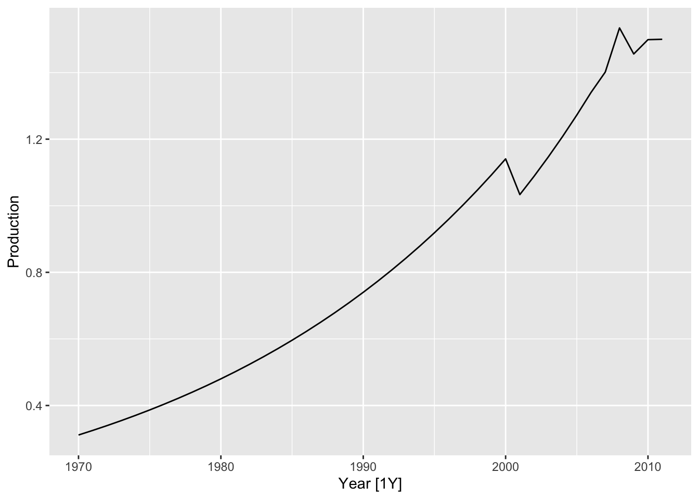
In this plot we can see that Production increases over time (known as trend). The increase is mostly smooth but there are a couple anomalies in 2001 and 2008.
Plotting the time variable
In this plot, Production and Year are two continuous variables. We would often like to plot two continuous variables with a scatter plot, however in time-series we prefer to connect the observations from one year to the next to give this line chart.
We can also use autoplot() to produce a time plot of many series, but be careful not to plot too many lines at once!
aus_accommodation |>
autoplot(Takings)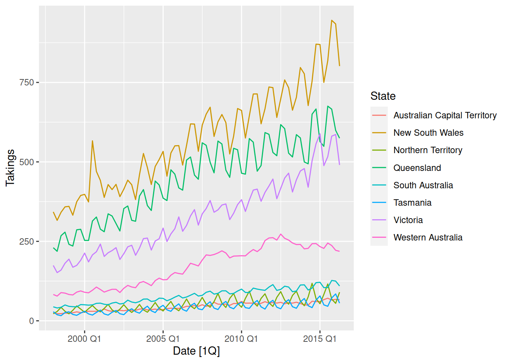
In this plot of Australian accommodation takings, we see that most states have increasing takings over time (upward trend). We can also notice a repeating up and down pattern, which upon closer inspection repeats every year. This repeating annual pattern is known as seasonality, and we can see that some states are more seasonal than others.
Let’s focus on the sunny holiday destination of Queensland, and use different plots to better understand the seasonality.
aus_accommodation |>
filter(State == "Queensland") |>
autoplot(Takings)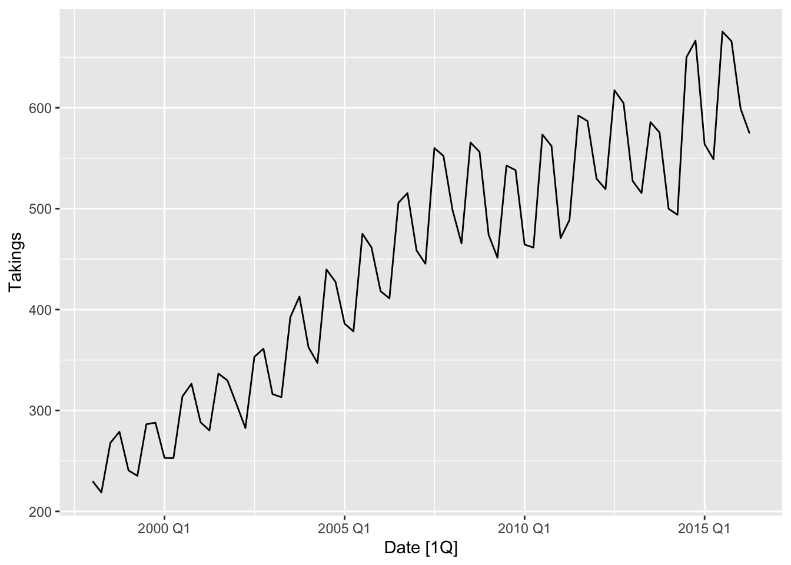
Your turn!
Using the tourism dataset, create time plots of the data. Which patterns can you observe?
Some starter code has been provided for you in the day 1 exercises.
Hint: there are too many series to show in a single plot, so filter and summarise series of interest to you.
Seasonal plots
It can be tricky to see which quarter has maximum accommodation takings from a time plot. Instead, it is better to use a seasonal plot with gg_season() from feasts.
library(feasts)
aus_accommodation |>
filter(State == "Queensland") |>
gg_season(Takings)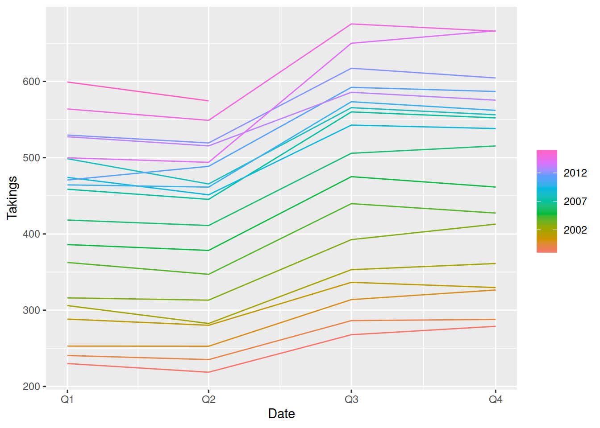
Here we can see that the Q3 and Q4 takings are higher than Q1 and Q2, this is known as the seasonal peak and trough respectively.
The season plot
The seasonal plot is very similar to the time plot, but the x-axis now wraps over years. This allows us to more easily compare the years and find common patterns, like which month or quarter is biggest and smallest.
Your turn!
Using the tourism dataset, create a seasonal plot for the total holiday travel to Australia over time. In which quarter is holiday travel highest and lowest?
Some starter code has been provided for you in the day 1 exercises.
Seasonal subseries plot
Another useful plot to understand the seasonal pattern of a time series is the subseries plot, it can be created with gg_subseries(). This plot is splits each month / quarter into separate facets (mini-plots), which shows how the values within each season change over time. The blue lines represent the average, which is a useful way to see the overall seasonality at a glance.
aus_accommodation |>
filter(State == "Queensland") |>
gg_subseries(Takings)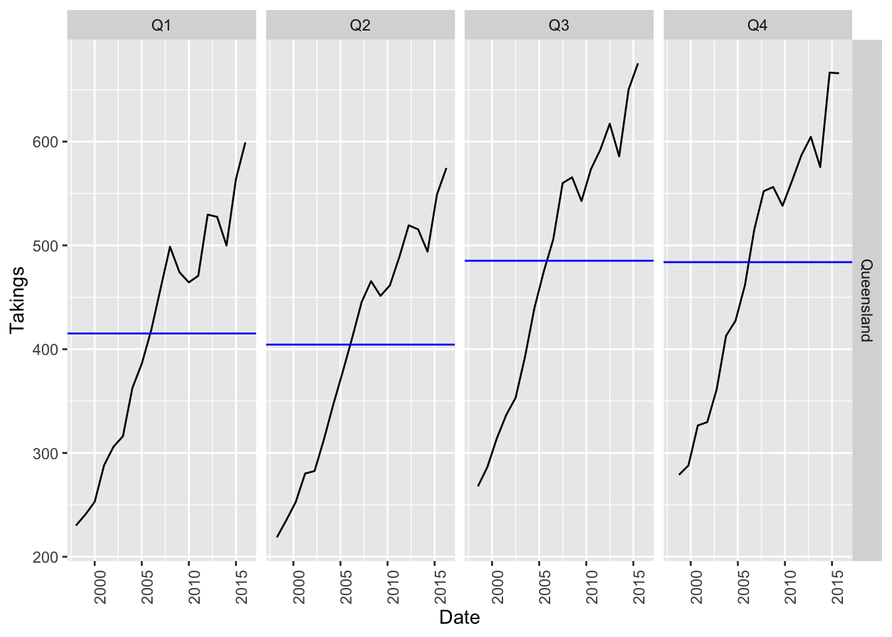
Seasonal sub-series plots
The upward lines in each facet of this plot shows the trend of the data, however if the lines went in different directions that would imply the shape of the seasonality is changing over time.
Seasonal plots work best after removing trend, which we will see how to do tomorrow!
Let’s see this plot with a different dataset, recent beer production in Australia.
aus_beer <- tsibbledata::aus_production |>
filter(Quarter >= yearquarter("1992 Q1")) |>
select(Beer)
aus_beer |>
autoplot(Beer)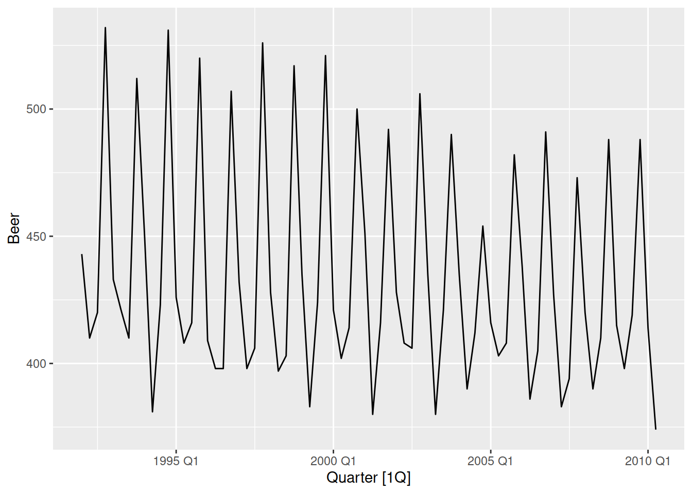
At a glance, this looks like the it is very seasonal and has a slight downward trend. However the seasonal subseries plot reveals that the trend is misleading!
aus_beer |>
gg_subseries(Beer)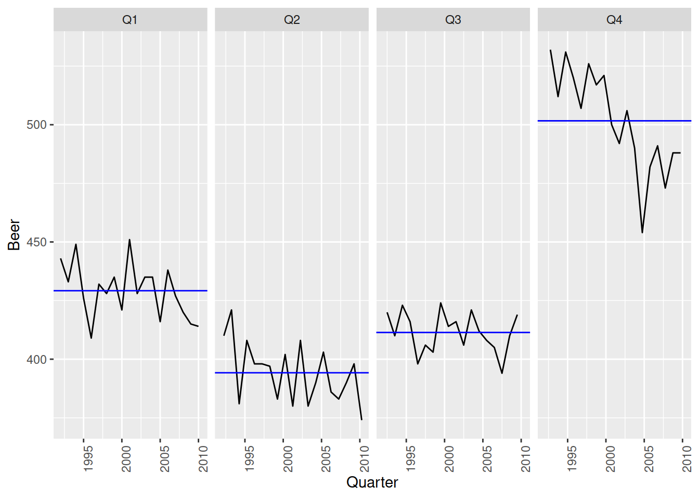
Here we see that only Q4 (the peak) has a downward trend, while the other quarters are staying roughly the same. The seasonality is changing shape over time.
Changing seasonality
Look back at the time plot and focus only on the Q4 peaks, can you see these values decreasing over time? Now look at the Q1-Q3 throughs, how do they change over time?
This can be tricky to notice in the time plot, which is why seasonal subseries plots can be particularly helpful!
Your turn!
Using the tourism dataset, create a seasonal subseries plot for the total business travel to Victoria over time. Does the seasonal pattern change over time?
Some starter code has been provided for you in the day 1 exercises.
ACF plots
These plots may look a bit strange at first, but they are very useful for seeing all of the time series dynamics in a single plot. ACF is the ‘auto-correlation function’, essentially a measure of how similar a time series is to the lags of itself. Looking at these correlations can reveal trends, seasonality, cycles, and more subtle patterns. You can create an ACF plot using a combination of ACF() and autoplot().
guinea_rice |>
ACF(Production) |>
autoplot()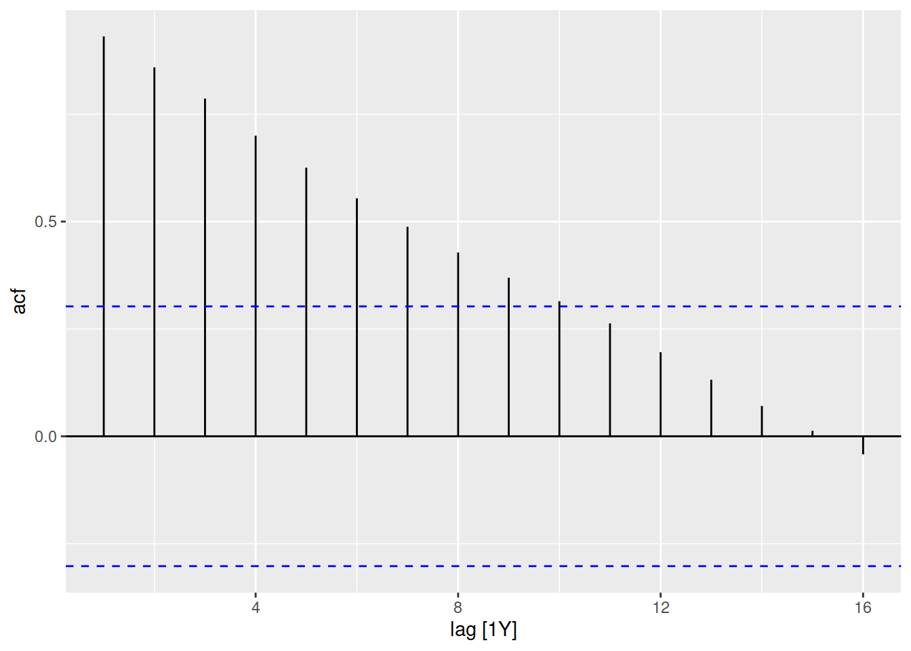
The rice production of Guinea has an upward trend, which produces a gradual decay in the ACF.
aus_beer |>
ACF(Beer) |>
autoplot()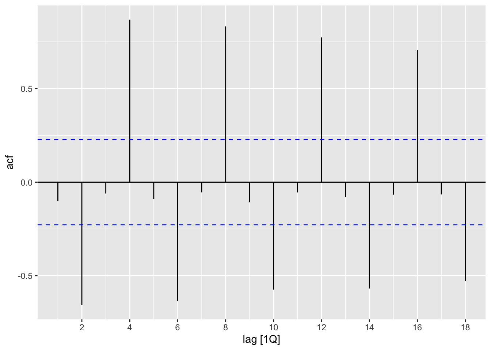
The recent beer production of Australia has lots of seasonality and no trend, which creates large peaks at the seasonal lags in the ACF. Every 4 quarters we see a large ACF spike.
aus_accommodation |>
summarise(Occupancy = sum(Occupancy)) |>
ACF(Occupancy) |>
autoplot()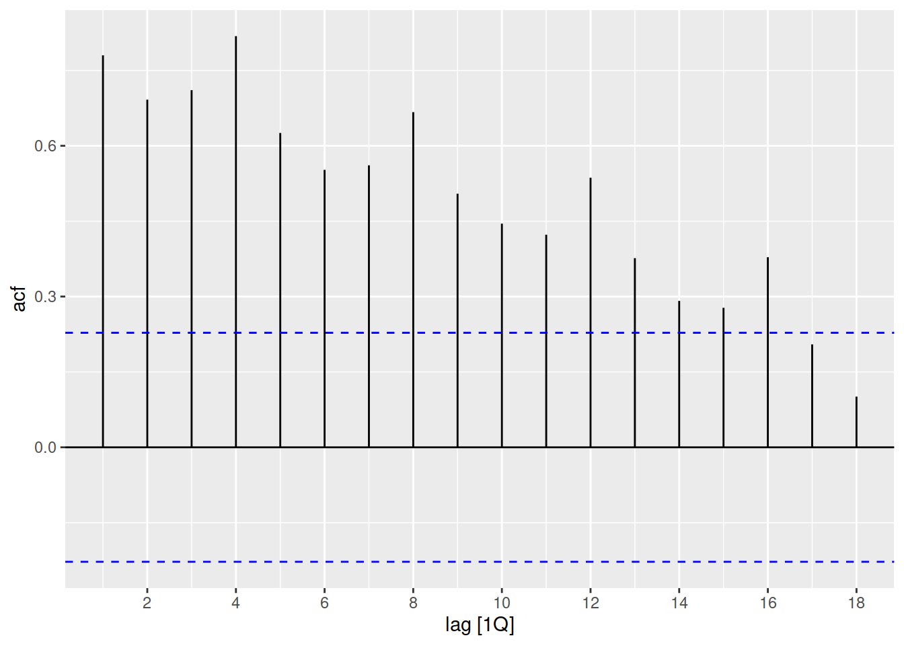
The total occupancy of Australia’s short-term accommodation is both trended and seasonal, which results in a slowly decaying ACF with peaks every seasonal lag (4, 8, 12, …).
Consider the number of Snowshoe Hares which were traded by the Hudson Bay Company.
tsibbledata::pelt |>
autoplot(Hare)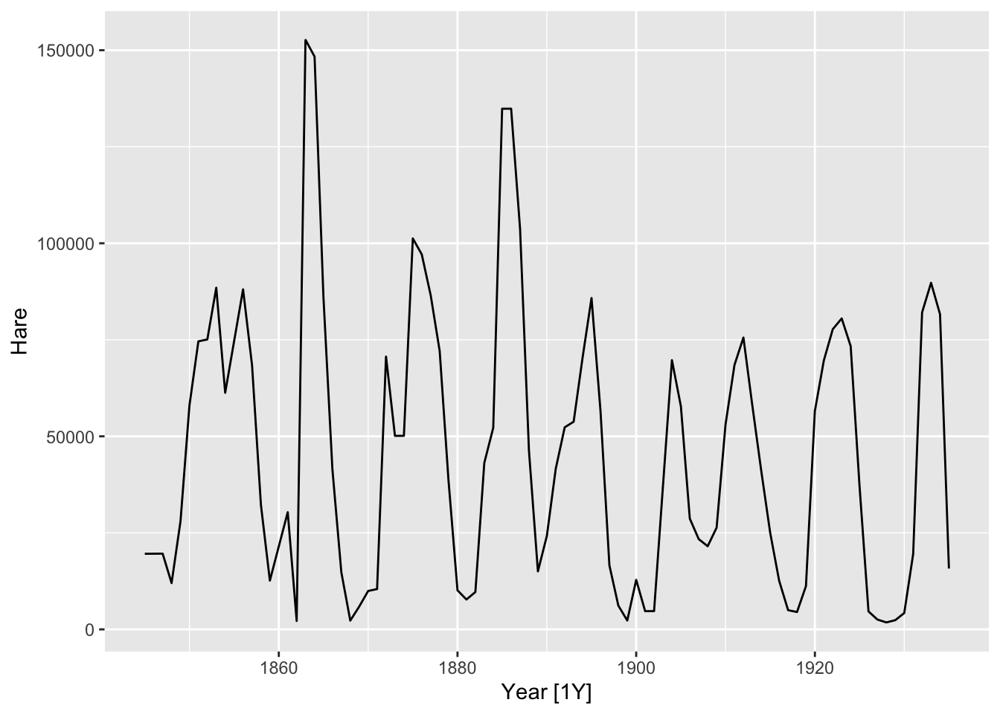
To the untrained eye, this series has lots of up and down patterns - a bit like seasonality. However this pattern is cyclical, not seasonal. The ACF plot can help us distinguish cycles from seasonality.
Seasonal or cyclic?
Seasonality is a consistent repeating pattern, where the shape shape with similar peak and trough repeats at the same time interval.
Cyclical patterns are less consistent, with varying peaks and troughs that repeats over a varied time period.
Let’s see the ACF for this dataset
tsibbledata::pelt |>
ACF(Hare) |>
autoplot()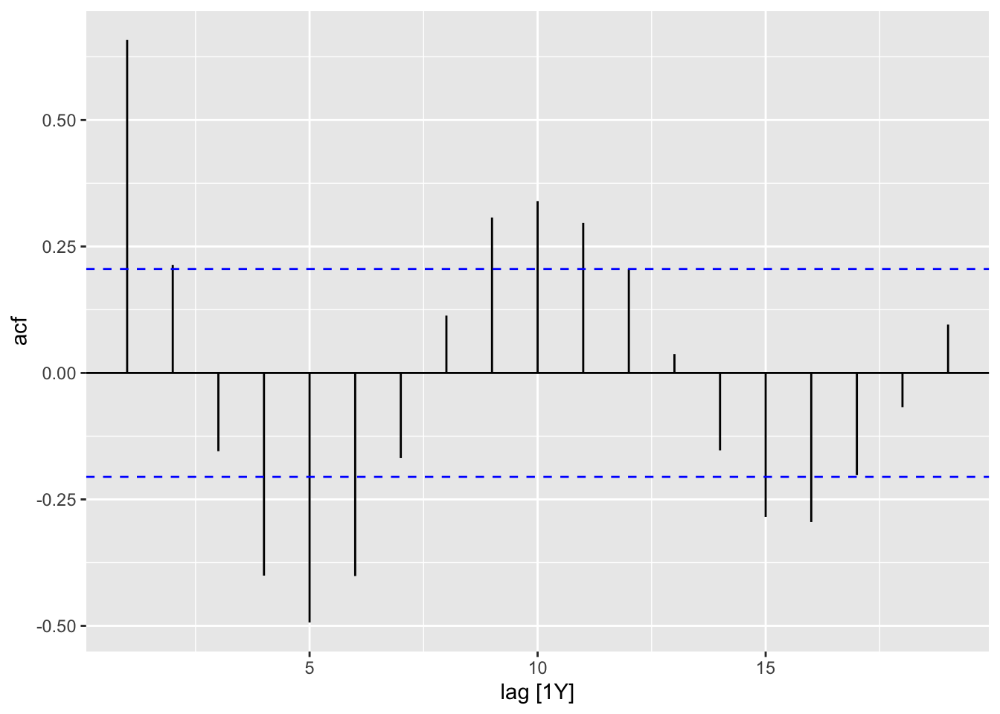
Notice that the peak at lag 10 is less symmetric and ‘sharp’, this is because the pattern usually repeats every 10 years but sometimes 9 or 11. This is unlike seasonality, which has a sharper peak in the ACF due to the consistent time period between patterns.
Your turn!
Identify which ACF matches the time plots in the following figures by identifying the patterns of trend, seasonality, and cycles in the ACF plots.

Your turn!
Using the tourism dataset, create an ACF plot for the total travel to Australia over time. Can you identify patterns of trend and seasonality from this plot?
Some starter code has been provided for you in the day 1 exercises.
ACF model evaluation
Importantly, ACF plots can also tell us when there are no patterns/autocorrelations in the data (white noise).
We’ll be revisiting this plot to evaluate our models on day 5. We hope that a model uses all available information, and ACF plots can show if there is any patterns left over.
Apply
About the dataset
In this exercise, we use a dataset containing dose of BCG (Cacille Calmette-Guérin), vaccine administrated in 9 regions of an African country from January 2013 until December 2021. BCG is a widely administered vaccine primarily used to protect against tuberculosis (TB), a serious infection that primarily affects the lungs but can also affect other parts of the body. BCG vaccination is recommended for newborn babies at risk of tuberculosis (TB) and is typically administered shortly after birth, usually within the first 28 days of life.
In addition to the administered dose, it also includes data on the population of children under one year old, and whether a strike occurred in a specific month and region.
In this exercise, you will apply what you have learned about different steps in the forecasting workflow on this dataset.
Your turn!
Import
vaccine_adminstrated.csvdata into R- Check and modify the data types of variables as needed
Prepare your data
- Check and fix missing values
- Check duplications and fix it
- Create tsibble
- Check and fix temporal gaps
Manipulating time series
- Create monthly time series of total doses adminstrated in the country
- Create quarterly time series of doses adminstrated in each region
- Create quarterly time series of total doses adminstrated in the country
Visualizing time series
- Use time plots and describe what patterns you observe
- Create plots to see if any consistent pattern exsists in monthly and quarterly of dose admisntrated
- Create plots to see how dose admisntrated chnage over time for each month/quarter and how it differs across differnt month/quarter